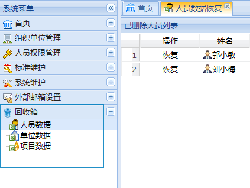
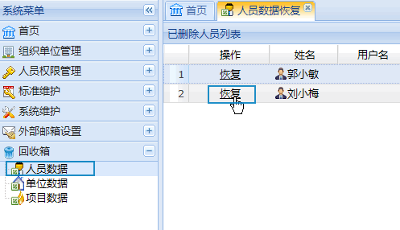
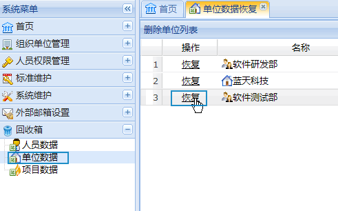
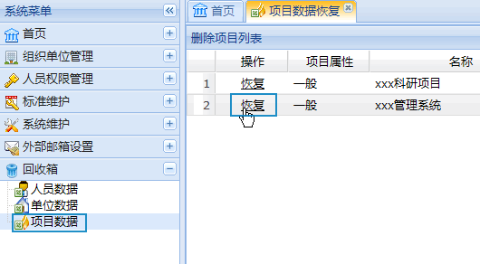

3.9 回收箱
oKit支持用户恢复已删除的人员，单位以及项目。回收箱列表如下图：
图 回收箱
3.9.1 人员恢复
在左侧列表中点击“人员数据”，可以打开人员恢复界面。在已删人员列表中，点击可恢复相应的人员数据，如下图：
图 恢复人员
3.9.2 单位恢复
在左侧列表中点击“单位数据”，可以打开单位恢复界面。在已删单位列表中，点击可恢复相应的单位数据，如下图：
图 恢复单位
3.9.3 项目恢复
在左侧列表中点击“项目数据”，可以打开项目恢复界面。在已删项目列表中，点击可恢复相应的项目数据，如下图：
图 恢复项目